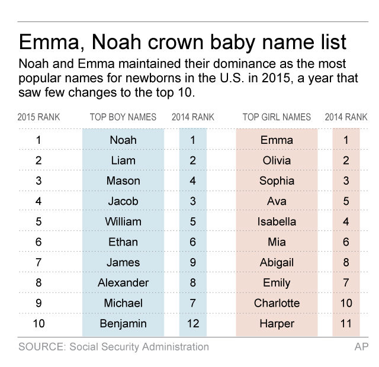

These were the top baby names in the U.S. in 2015
WASHINGTON (AP) — When it comes to baby names, Emma and Noah reign supreme.
And don’t name your daughter Isis.
For the second year in a row, Emma and Noah top the annual list of top baby names in the U.S., according to the Social Security Administration. That’s the third year on top for Noah and the second in a row for Emma, which was also No. 1 in 2008.
The administration released its annual list of top baby names Friday, and the top five names for girls and boys in 2015 remained unchanged from the previous year. Noah was followed by Liam, Mason, Jacob and William. Emma was followed by Olivia, Sophia, Ava and Isabella. Ava and Isabella switched spots from 2014, with Ava climbing to number 4.